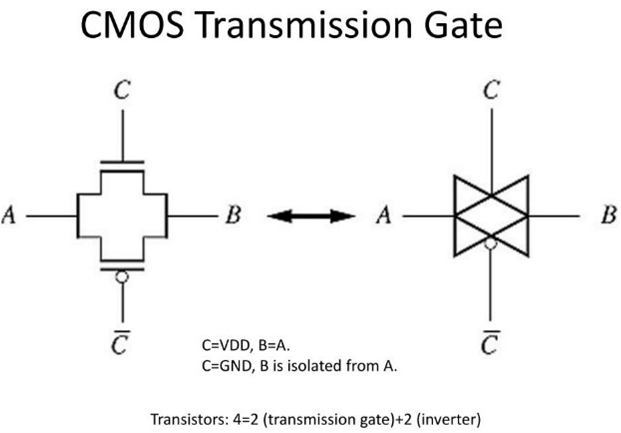

Answer:
Definition: A transmission gate is a bidirectional electronic switch made by connecting an NMOS and a PMOS transistor in parallel.
Operation: It conducts when the control signal is HIGH (`CTRL = 1`) and blocks when the control signal is LOW (`CTRL = 0`), using complementary gate signals for NMOS and PMOS.
Advantage: It passes both logic 0 and logic 1 efficiently, unlike a single MOSFET, and is widely used in multiplexers and analog/digital switching circuits.
Answer:
About 2:1 — PMOS is made wider to compensate for lower hole mobility, balancing rise and fall times.
Answer:
FET sizing is the process of setting the width (W) and length (L) of MOSFET channels to achieve desired performance in terms of speed, drive strength, and power.
L is usually fixed by technology (minimum length)
W is varied to control current drive ,Typically PMOS width = 2× NMOS width
Answer:
A stick diagram is a diagrammatic representation of a chip layout that helps to abstract a model. Stick diagrams are used to convey the layer information with the help of a color code.
Colors for Stick or Layout Diagram:
Answer:
λ-based design rules express all layout dimensions as multiples of a single scalable unit λ, where
Portable across different process technologies.
Simplifies scaling and layout dimensioning.
Minimum feature size is defined as 2 λ
Answer:
The smallest allowable distance between two features on the same or different layers to avoid shorts or process defects.
Answer:
Advantages:
Lower on-resistance → faster switching and Higher drive current.
Disadvantages:
Larger gate/diffusion capacitance → may increase delay if oversized. More area and leakage.
Answer:
1. Minimum width – smallest allowed line width for poly, metal, etc.
2. Minimum spacing – minimum distance between two features.
3. Enclosure rules – how much one layer must overlap another (e.g., metal over contact).
4. Extension rules – how far a layer must extend beyond another (e.g., poly over active).
5. Contact/via rules – size and spacing for vias between layers.
6. Well and implant rules – spacing between n-well, p-well, and active areas.
7. Special rules – antenna effect prevention, density rules, and latch-up prevention.
Answer:
Answer:
